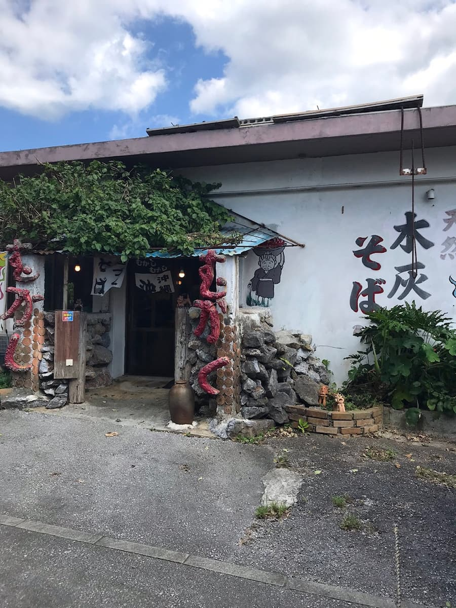
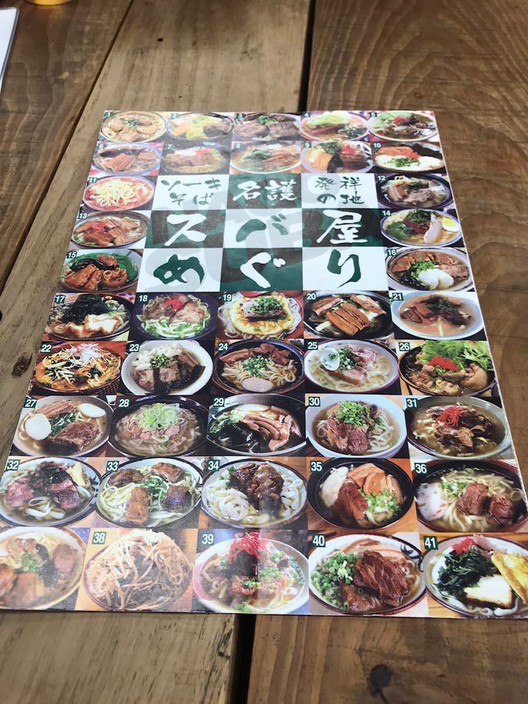
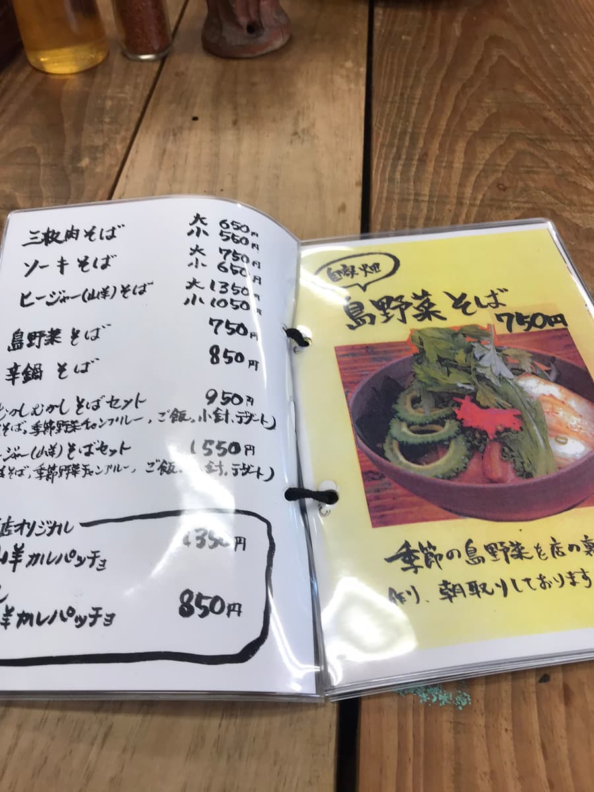
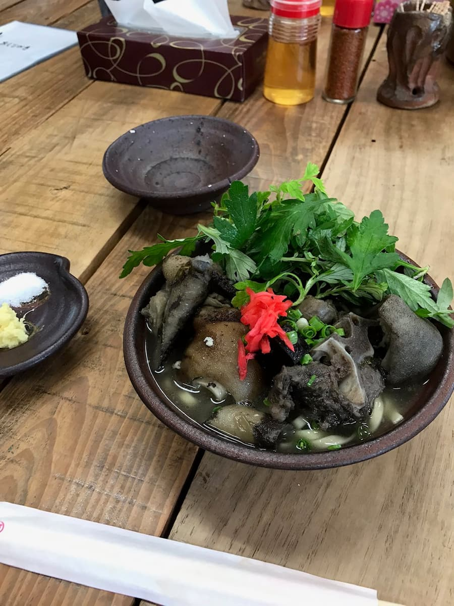

Relying on the “Nago City Soba Map,” I ate at “Mukashi Mukashi” (October 2020).


The soba map explains “The house-made mokkai soba (made with wood-ash lye) by the potter owner can't be tasted anywhere else!” and has a photo of the “hiija (goat) soba” ^^;
Although I am an Uchinanchu (Okinawan), I have avoided goat since the last time I had hiija soup in junior high school, out of a picky refusal to even try it, but this time I thought it would be a good experience and took on the challenge 💪


The toppings as they look are indeed beastly, lol But when I ate it, there was absolutely no gamey smell, the meat was tender, and it was just plain tasty ☺ The topping of fuchiba (mugwort) also plays a role in masking odors.
The noodles were mokkai soba made from wood from the hill behind, and the flavor was different from noodles at other shops. The goats are also raised on the hill behind, and you can hear them bleating, which gives a nice peaceful countryside atmosphere.
Rating (9.5/15): Its looks are a shock, lol, but it's just plain tasty ☺ If you're tired of ordinary Okinawa soba, why not give it a try?
PS: While eating I could enjoy it with no gamey smell, but for a while after finishing, my own breath seemed to smell beastly lol Be careful, haha
Also, home-grown shikuwasa and limes were being sold at the counter, so I bought some as souvenirs to put in awamori back home (200 yen total), lol
Noodles: ★★★✬☆（3.5）
Soup: ★★★☆☆（3）
Toppings: ★★★☆☆（3）